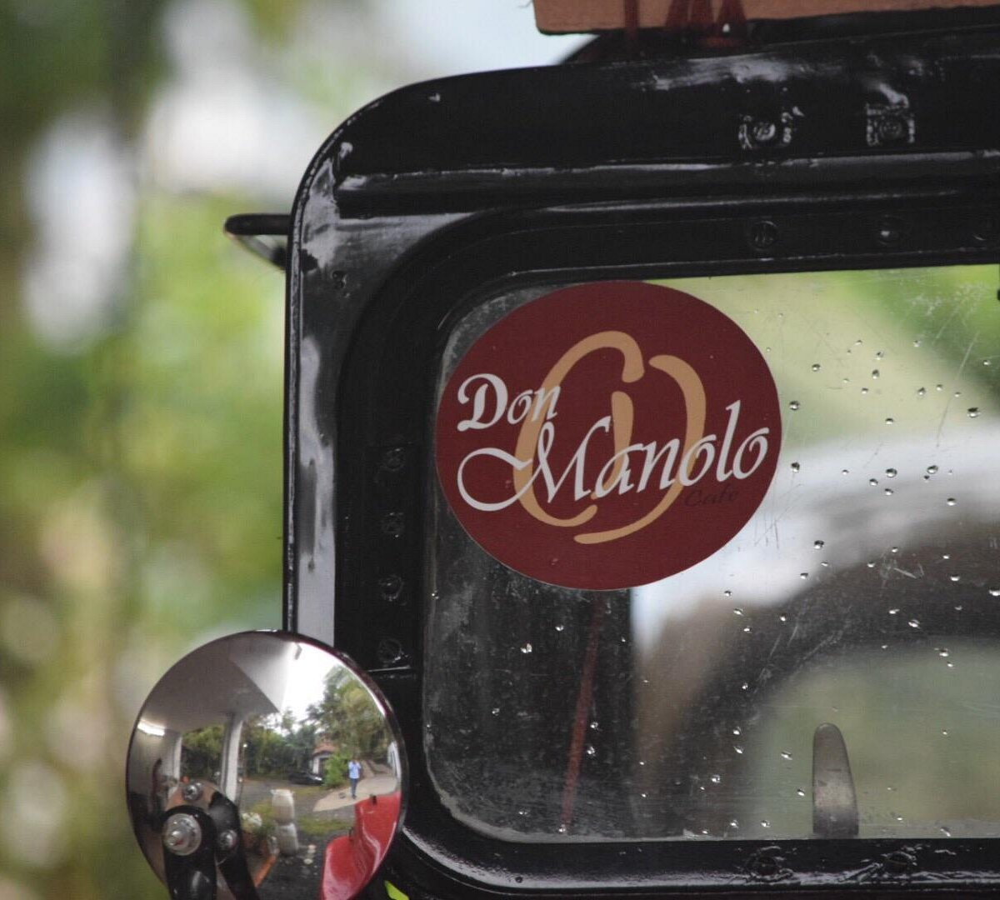
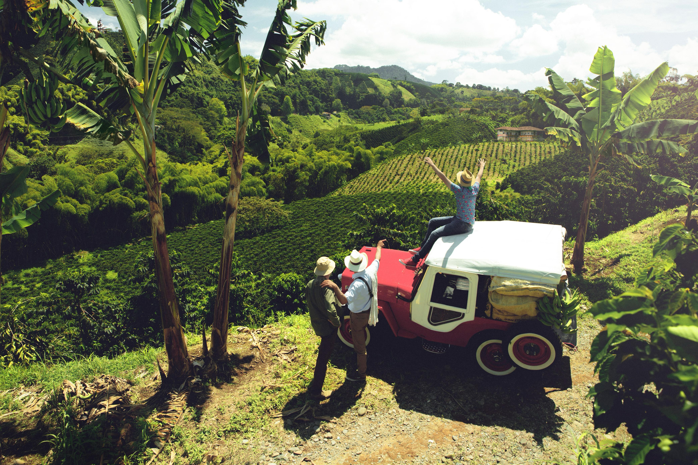
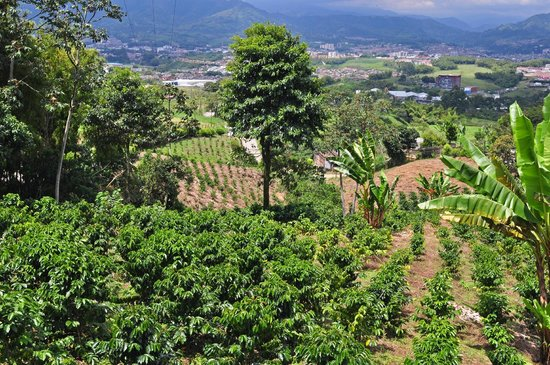
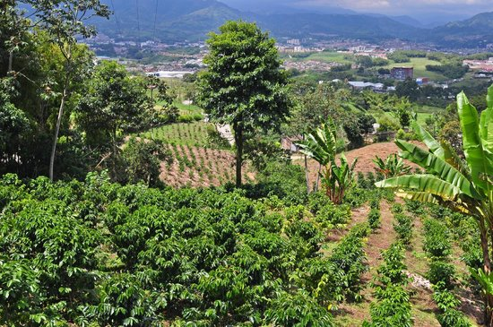
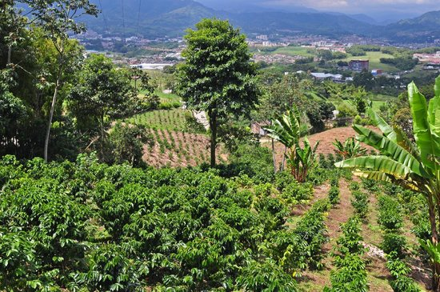

Café Don Manolo
Vereda El Estanquillo, Pereira


 


Descripción
Café Don Manolo es una auténtica finca cafetera ubicada en la vereda El Estanquillo de Pereira. Este lugar ofrece una experiencia única donde los visitantes pueden conocer el proceso del café, desde el cultivo hasta la taza, rodeados de impresionantes vistas a las montañas de Risaralda.
Características
- ☕ Café de origen
- 🌱 Cultivos de café
- 🏞️ Vistas panorámicas
- 👨🌾 Tour del café
- 🌄 Atardeceres
- 🍃 Aire puro
- 📸 Puntos fotográficos
Horarios y Precios
Horario:
8:00 AM - 5:00 PM
Días:
Martes a Domingo
Tour del café:
Reserva previa
Restaurantes en Pereira
-
Cardinal Comida Peruana de Autor
- Cocina peruana de autor
- Platos innovadores
- Sabores auténticos
-
La Trattoria
- Cocina italiana tradicional
- Ambiente acogedor
-
Latino Cocina Popular
- Platos latinoamericanos
- Toque moderno
-
Kilaba
- Fusión internacional
- Ambiente contemporáneo
-
Río y Carbón
- Parrilla y mariscos
- Vista al río
Alojamientos cercanos
-
Hotel GHL Abadía Plaza
- Distancia: 2.7 km
- Hotel moderno
- Servicios de calidad
-
Hotel Soratama
- Distancia: 2.7 km
- Ubicación céntrica
- Fácil acceso a atracciones
-
Hotel Luxor Plaza Pereira
- Distancia: 2.7 km
- Habitaciones confortables
- Servicios completos
-
Finca Hotel Villa Ilusión
- Ubicación: Dosquebradas
- Entorno natural
- Ambiente tranquilo
Recomendaciones
- 🚗 Acceso en vehículo particular recomendado
- 📞 Reservar con anticipación
- 👟 Calzado cómodo para caminatas
- 🌦️ Verificar clima antes de visitar
- 📸 Llevar cámara para fotos